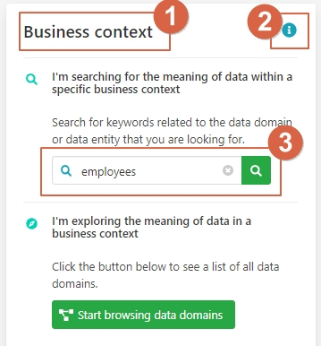

Other User Story 3
In a data analytics project a data scientist or data engineer requires data to answer the business question of the project. The engineer does not know exactly which relevant data is available, where the data is stored and whom to ask to get access to the data.
In an organization without data governance tooling in place, the person will start contacting various people, asking for the availability of data, where the data is stored and how she can get access to the data. The longer you are in organization and the more people you know the easier the task, anyhow, it will take a long time. Even when you have found the right data, and found the accountable person to provide access, you must sit with the owner of the data to get a good explanation of the meaning of the different fields. For engineers with a lesser network in the organization the task will be even more tedious and time consuming.
Aurelius Atlas makes the information on which data is available, where it is stored and who is accountable for it easily accessible. Which results in quicker access to relevant data.
With the Aurelius Atlas solution you can easily search for the meaning of data, see who is accountable for it and where it is stored. Further, detailed descriptions of the meaning of the individual atomic attributes are provided.
To illustrate the process of finding relevant information, the location of the data and the accountable person, the following scenario is described: A data engineer is working in a HR project investigating the use of permanent employees. To answer the related business questions, she needs data about employees in the organization.
To find the required information she accesses Aurelius Atlas application and searches for data with a meaning related to “employee”. Thus, in the business context of the application she is entering the search term “employee” and starts the search.
1 – The context that you are working on.
2- Info icon, that gives you information about the context.
3 – Search bar for looking for the meaning of data
By hitting the search icon, you will get a list of possible concepts.
As you can see in the screen shoot below:
1 – Filter the search by type, domain, entity etc.
2 – Results of the search
The data engineer is not looking for specific fields, but for entities representing employees, thus she filters those results on data entities to be more concrete and narrow the search. Applying the filter reduces the result to 4 entities as depicted below.
Filtering reduced the number of results. The result set is now small enough to go through it one by one. Comparing the entity “Personnel” and “Internal” by looking at the breadcrumb indicates that the concept Internal is a child entity of the entity Personnel.
Since the data engineer is interested in permanent employees, she selects the entity “Internal”.
Thus, all details of the entity “Internal” are shown as depicted below.
1. Name and type of entity: Gives information about the entity and what type it is
2. Business hierarchy: Shows where it is inside the domain
3. Description: Provide information about the entity
4. People that oversee this data: People that oversee this data
5. Summary of page structure: Quick view of all the elements of the page
6. Button: to navigate for the structure of the page
Now you can see that the Business Owner of the data is Merel Hofman, thus, to get access to the data you have to ask permission from Merel. Still the data engineer does not know where the data is stored.
In the summary of the page you can see that there’s one place where the data is technically stored, it’s called a Dataset.
Let’s go to this section, to see where the data are stored:
1 - Press on the button
2 – Select Dataset to see where the data is stored.
Once the datasets section is visible.
Here you can see an overview of where your data is stored:
1 – Results of the datasets
2 – Name of the dataset and where is in the hierarchy: Name of the database table and where is located
3 – Filter: to filter down in the datasets
4 – Search bar: to look for the entities inside this dataset
5 – Type of storage
The data engineer can see that the data is stored in a database table called NL1-HR-001, which resides in a database called NL1-HR, which is located on a system called NL1.
To get more details about the database table NL1-HR-001, click on it. Please be aware that we are moving from the business aspects of the data to the technical aspects of the data.
This is all the information that you need to get access to the data of the internal entity, now you know that the person in charge of this data is Merel Hofman, and the data is located in the database table NL1-HR-001, and this is how Aurelius Atlas Data governance solution can help you get it in a fast and easy way.
BENEFITS:
1 – Look for data in an easy and fast way
2 – Clear vision of who is accountable for this data
3 – Detail view of where is stored this data
4 - Have all the knowledge about your data